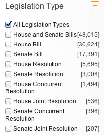
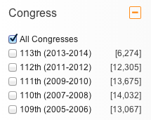

Where We're Coming From
- Ruby on Rails
- Angular.js
- Many different single-page Angular apps
- Each app deals with different data and has slightly different needs
- Still want to share common components
What do we mean by components?


Angular.js directives are awesome!
- Extend HTML vocabulary
- Declarative style makes page logic easy to follow
- "Write once, reuse everywhere"
Angular.js directives are awful!
- Poor documentation
- Challenging for new developers
- No directive inheritance
- Difficult to extend without entering "options hell"
Case Study: Pagination
- Everybody needs pagination at some point
- Even a simple paginator has nontrivial logic
- Different types of data may require different pagination techniques
Object-Oriented Directives
- Thin directive delegates to object factories
- Factories can be subclassed using Angular Injector
- Most tests written for Plain Old Javascript Objects
- Offer hooks instead of configuration options
Demo
Standard Pagination with 5 pages
We're hiring
Find Our Code
Follow Us